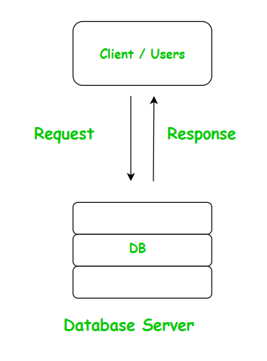
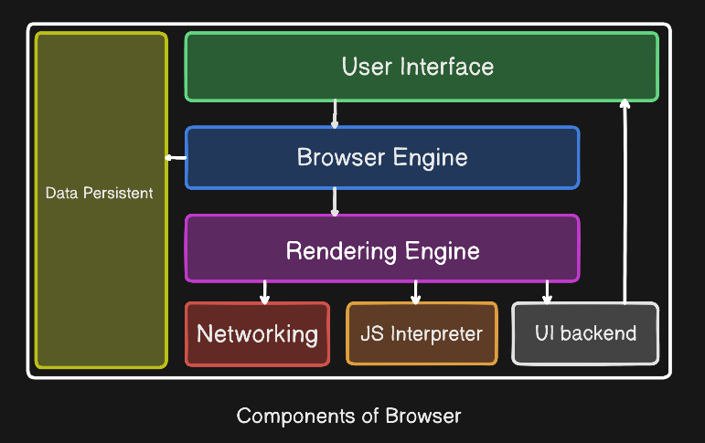
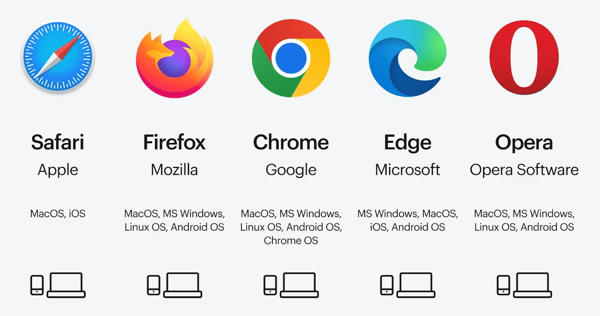

- Client-server model
-

Each web exchange operates through a request-and-reply pattern in which one program seeks something, and another provides it. The requesting side is the client, and the responding side is the server. In this setup, the browser sits on the client side, sending its requests across the Web while all the heavy processing load takes place on a remote system. - Networking component
-
This part of the browser is responsible for contacting web servers and downloading the pieces that make up a site, including code, images, and video content. Once it has pulled in these files, it hands them off to the rendering engine, which uses them to construct and render the page.

- Browser tools for safety and privacy
-
A modern browser includes a set of security measures designed to shield users as they navigate the Web, such as encrypting data with HTTPS, limiting how sites can monitor activity, blocking intrusive pop-ups, and steering people away from harmful pages. Users no longer view these as bonus features but as something every browser ought to provide by default.
- Types of Browsers
-
Browsers fall into several categories based on where and how they run: desktop, mobile, and embedded. Desktop versions deliver the most comprehensive capabilities and include specialized tools for building websites. Touchscreen-oriented mobile versions trade some of that depth for streamlined, finger-friendly interfaces. Embedded versions are pared-down browsers woven directly into other software, such as email programs, social media platforms, and gaming systems.

- NCSA Mosaic
-
This graphical browser, launched in 1993, helped transform the Web into something the general public could actually use. Rather than opening images in a separate viewer, it displayed them within the text itself, and it allowed pages to appear on screen while they were still loading. Later browsers would come to treat both of these innovations as basic requirements.